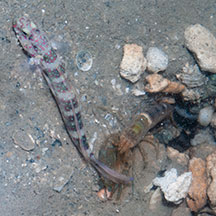
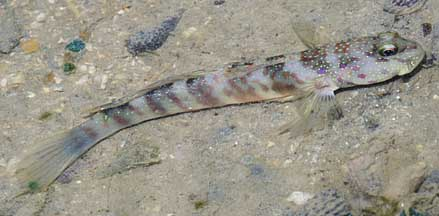
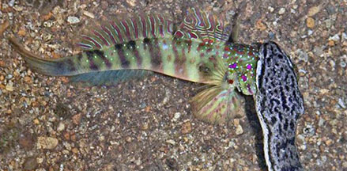
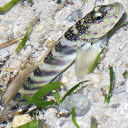
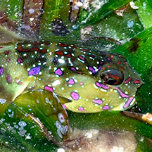
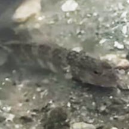
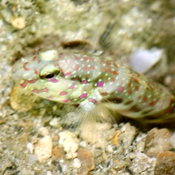
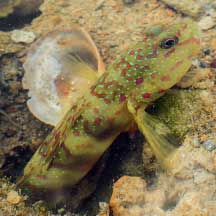
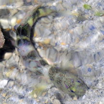
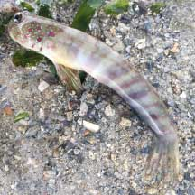

|
|
| fishes text index | photo index |
| Phylum Chordata > Subphylum Vertebrate > fishes > Family Gobiidae |
| Pink-speckled
shrimp-goby Cryptocentrus leptocephalus Family Gobiidae updated Sep 2020 Where seen? This beautiful, slim long goby lives with a shrimp and is sometimes seen on our Southern shores. Elsewhere it is found in silty bottoms of mangroves, large tidal pools or inner reef lagoons, on sand and rubble. Synonyms of this fish are C. obliquus and C. singapurensis. Features: To about 8cm (according to FishBase, up to 12cm), those seen on our shores about 4-6cm. About 6 broad oblique bars on the body and the head has many bright pink bars and spots as well as many tiny blue dots. |
 Sometimes seen sharing a burrow with a Many-band snapping shrimp. Kusu Island, Aug 08 |
 Kusu Island, Jul 09 |
| Living with a shrimp: This fish is often seen sharing a burrow with a Many-band snapping shrimp. The burrow is near the mid-water mark. More about the goby and shrimp partnership. |
 Caught by Dog-faced water snake.. Pulau Semakau, Oct 13 Photo shared by James Koh on flickr. |
||
| Pink-speckled shrimp-gobies on Singapore shores |
On wildsingapore
flickr
|
| Other sightings on Singapore shores |
 Cyrene Reef, Sep 20 Photo shared by Loh Kok Sheng on facebook. |
 Cyrene Reef Dec 15 Photo shared by Loh Kok Sheng on his blog. |
 Pulau Semakau (South), Dec 24 Photo shared by Eugene Tan on facebook. |
 Terumbu Pempang Tengah, May 11 Photo shared by Liana Tang on facebook. |
 Terumbu Pempang Tengah, May 21 Photo shared by Vincent Choo on facebook. |
 Terumbu Pempang Laut, Jul 25 Photo shared by Adriene Lee on facebook. |
 Dead on Terumbu Pempang Laut, Jan 22 Photo shared by Kelvin Yong on facebook. |
Links
|